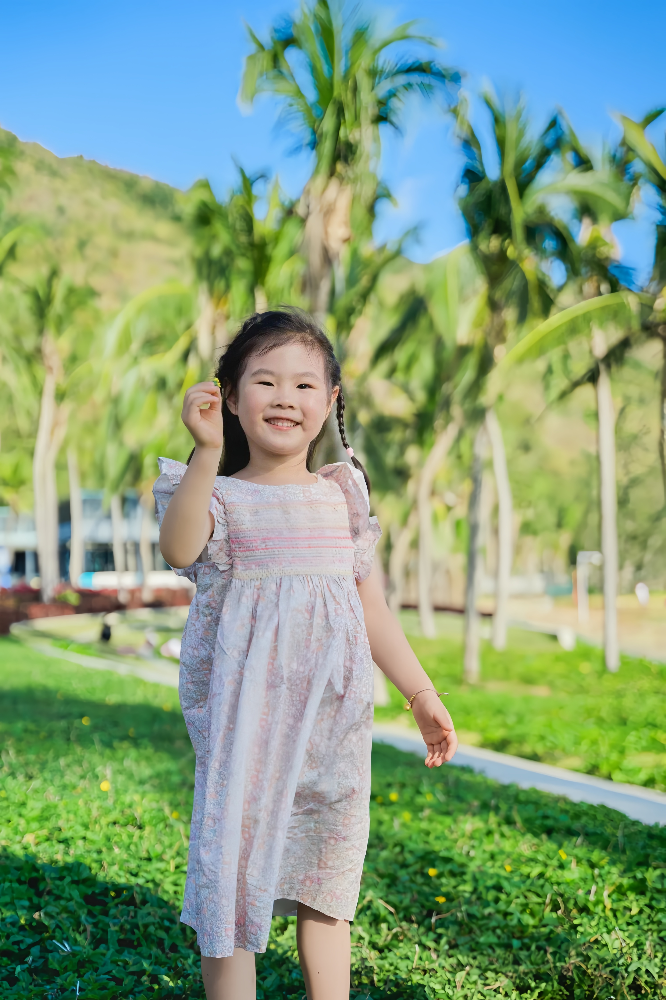
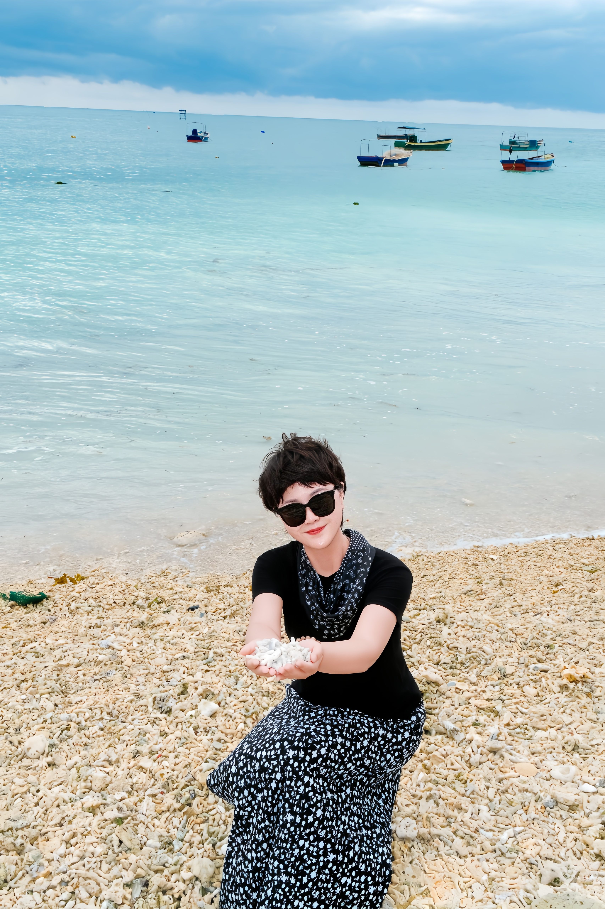
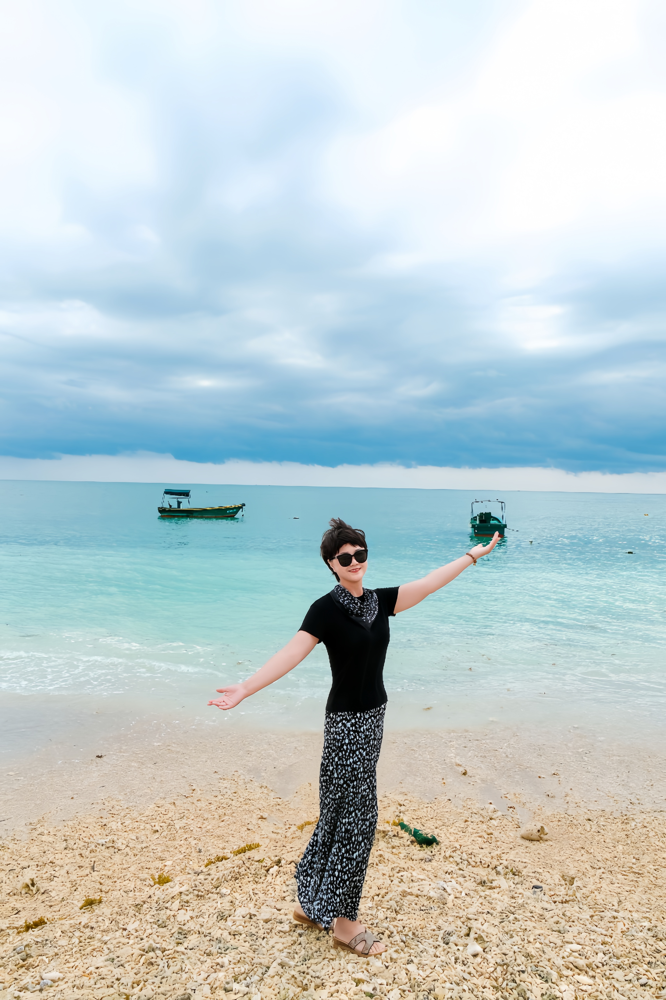
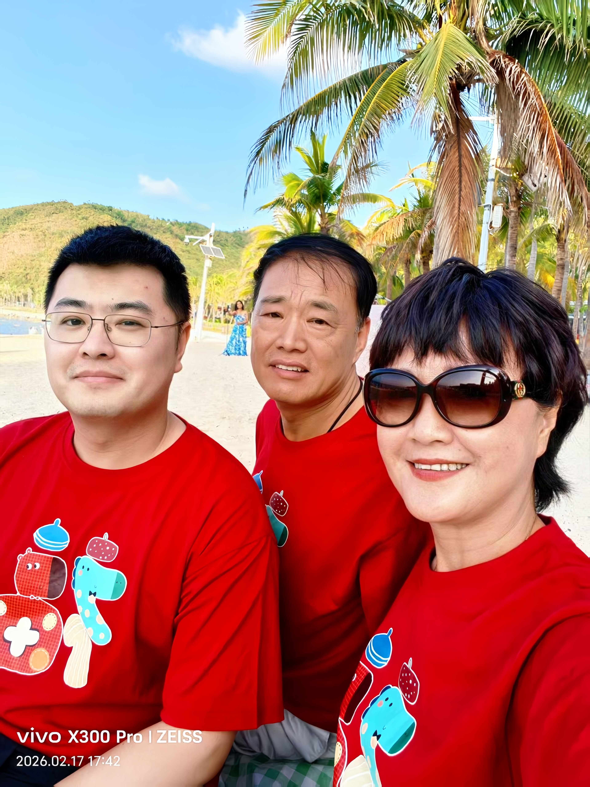

日子缓缓·爱意渐浓·小花盛开
二〇二五 · 海南
茶艺师 林熙 特别定制 · 礼安茶学出品
海风吹来，棕榈轻摇
七个人，一片海
日子在这里，慢了下来
笑声落在沙滩上
被阳光收进贝壳里
等到某天，轻轻打开
还能听见，那时的风
七个人，一片海，这就是家
坐在一起，便是最深的缘
三代同堂，血脉相连
一家人的笑，是最好的风水
你来了，春天就不走了

花间精灵
奔跑吧
纯真年代
每一个瞬间，都值得被记住
快乐，是他们最好的模样
飞吧，棠果儿
爸爸妈妈接着你
冉冉最软的心，都给了这个小人儿
花丛中的拥抱
眼神里，全是宝贝
一大一小，牵着走
父女情深 · 海边漫步
她站在那里，便是最好的风景
岁月静好，自在如风

拾贝时光

走过了这么多年，还是只想牵你的手
椰林漫步，手牵着手
不说话，也好

椰林深处，一家相依
这份礼，来自云南的山间
林熙寻茶十一年
走过千山，只为遇见最好的一片叶子
一盒茶，一段记忆
当您触碰这枚芯片
这段时光便在指尖重新流淌
愿这份礼
如好茶一般
在岁月里，慢慢变好
礼安茶学
林熙茶录
林熙茶录文化传播有限公司
让每一份情谊，找到最好的礼